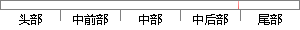

2、框架：一种WEB应用的特殊实现，代码只需要填充一些具体信息。
片段位置图

相似结果|
相似片段 1：jQuery等。(2)框架：选择好用的框架可以让开发工作事半功倍，在开发web应用的过程中框架是可以起到主导作用的，框架可以被认为是一种独特的已经完成了的web应用，我们只需要在其中填充自己需要的不同的具体业务
|
※ 片段修改建议 ※
近似词参考：- 应用：利用 运用
- 特殊：特别 非凡
- 填充：添补
- 具体：详细
系统自动生成语句：2、框架：一种WEB利用的特别实现，代码只需要添补一些详细信息。
注：本片段修改建议为系统自动生成，仅供参考。